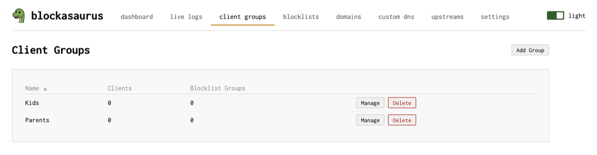
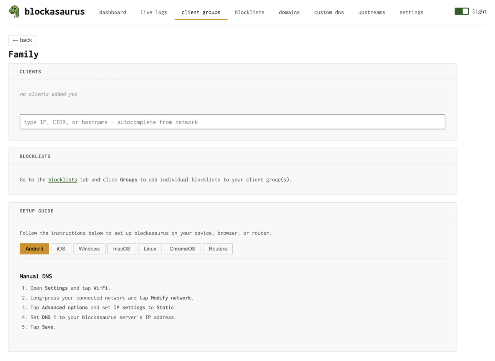
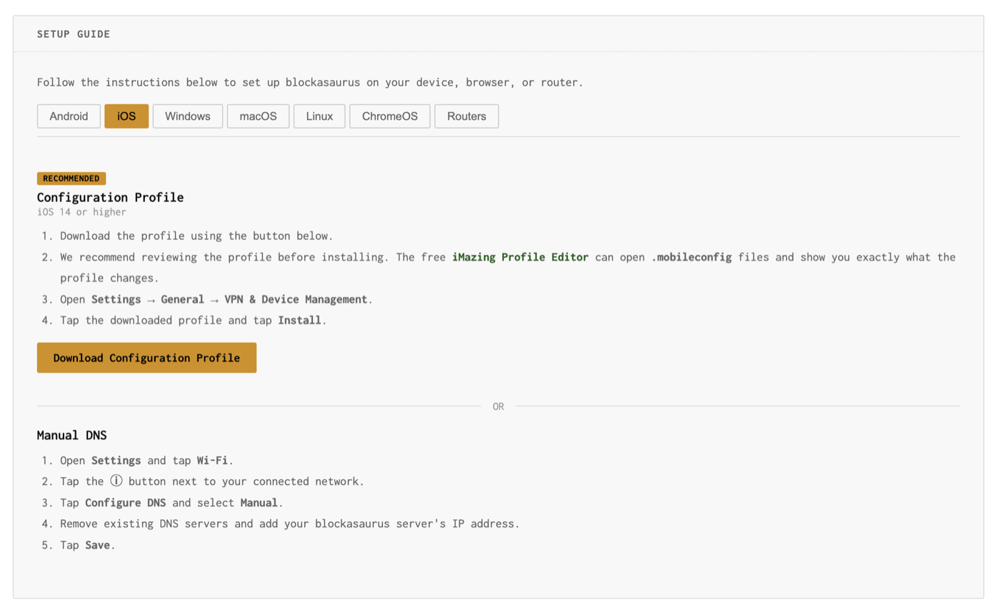

Client Groups
Organize devices and apply per-group blocking policies
Client groups let you apply different blocking policies to different devices on your network. A children’s tablet can have stricter filtering than your workstation. IoT devices can be locked down to a minimal allowlist.
The Default Group
The default group is special. It always exists
and cannot be deleted. Any device that doesn’t
match a specific group falls into default.
Think of it as your baseline policy: if you only ever use the
default group, every device on your network gets the
same blocking rules — which is perfectly fine for simple setups.
Client Groups Overview
Navigate to the Client Groups tab to see all groups. The overview shows each group with its client count and number of assigned blocklists.

Creating a Group
Click “Create Group” and give it a name
(e.g., “Kids”, “IoT”, “Guest”).
The name is converted to a DNS-safe slug (e.g., “Kids Devices”
becomes kids-devices) used for subdomain-based identification.
Managing Group Members
Click “Manage” on a group to open its detail view. The Clients section shows who belongs to this group.

Adding Clients
The client input is a combobox with autocomplete. Type to search or select from discovered devices on your network. You can add:
| Format | Example | Description |
|---|---|---|
| IP address | 192.168.1.42 |
Match a single device |
| CIDR range | 192.168.1.0/24 |
Match an entire subnet |
| Hostname | kids-ipad.local |
Match by discovered hostname |
Blockasaurus discovers devices on your network via ARP. The combobox shows discovered IPs along with their MAC address and hostname (if available), making it easy to find the right device.
Removing Clients
Each client appears as a chip with a remove button. Click the × to
remove a client from the group. The device will fall back to the
default group.
Client Identification Methods
Blockasaurus identifies which group a client belongs to using several methods. The method depends on how the client connects:
| Method | How It Works | Requires |
|---|---|---|
| Source IP | Matches the client’s IP address against group members | Plain DNS or externalTrafficPolicy: Local |
| DoH path | Client connects to https://dns.example.com/<slug> |
TLS + domain configured |
| DoT subdomain | Client connects to <slug>.dns.example.com:853 |
TLS + wildcard cert + domain |
| DoH subdomain | Client connects to https://<slug>.dns.example.com/dns-query |
TLS + wildcard cert + domain |
| EDNS CPE-ID | Client sends a CPE-ID EDNS option matching the group slug | cpeId: true in config |
Setup Guides
Each client group has a built-in Setup Guide that generates platform-specific instructions for connecting devices to that group. The guide dynamically adapts based on your server configuration (whether TLS is enabled, which domains are configured, etc.).

Supported Platforms
| Platform | Recommended Method | Alternative |
|---|---|---|
| Android | Private DNS (DoT) | Manual DNS |
| iOS | Configuration Profile (DoH/DoT) | Manual DNS |
| Windows | Secure DNS (Win 11) or DoH | Manual DNS |
| macOS | Configuration Profile (DoH/DoT) | Manual DNS |
| Linux | systemd-resolved (DoT) | resolv.conf, Stubby, Unbound |
| Routers | DHCP DNS setting | dnsmasq, Unbound, pfSense, MikroTik |
For iOS and macOS, you can download a configuration profile
(.mobileconfig) directly from the setup guide. If you’re
using a self-signed certificate, the profile can include the CA certificate
automatically.
Assigning Blocklists
Blocklists are assigned to client groups from the Blocklists page. Each blocklist can be assigned to one or more groups (many-to-many). See the Blocklists documentation for details.
Within a group’s detail view, the Blocklists section shows which lists are currently assigned and directs you to the Blocklists tab to manage assignments.
Example: Family Network
A common setup with three groups:
| Group | Clients | Blocklists |
|---|---|---|
default |
Everything not explicitly assigned | Ads, tracking |
kids |
Kids’ iPads, Chromebook | Ads, tracking, adult content, social media |
iot |
10.0.3.0/24 (IoT VLAN) |
Ads, tracking, telemetry |